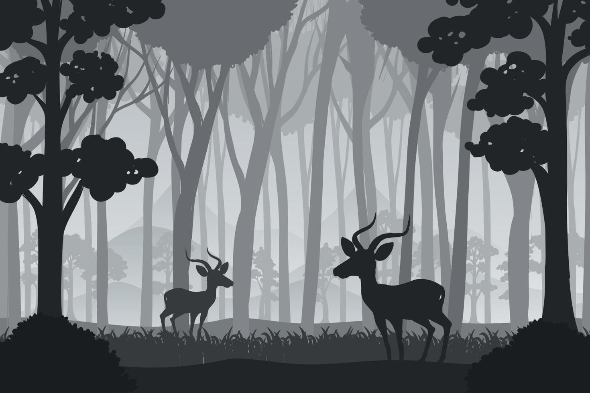
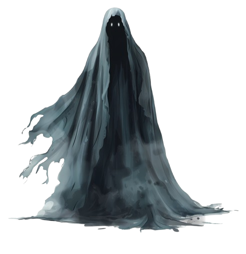
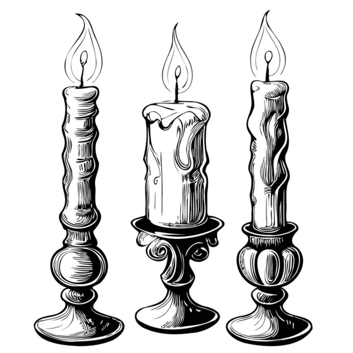
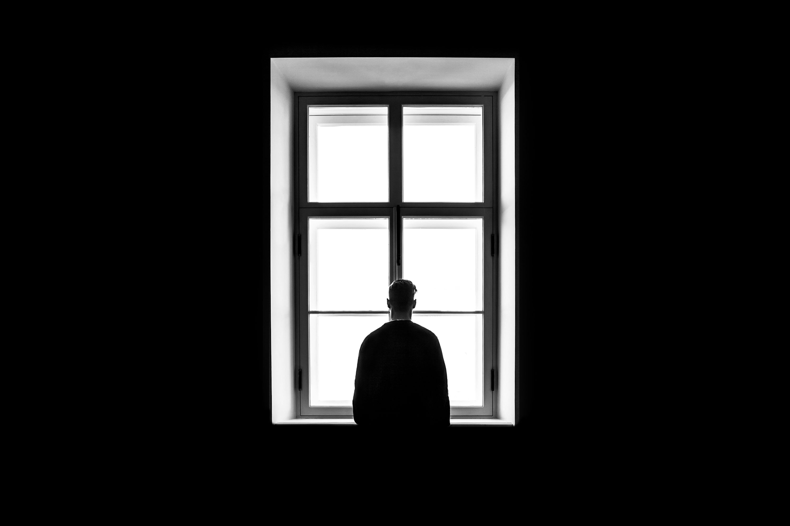

La Sombra del Bosque
Autor: ChatGPT
La Llegada a Valle Sombrío
Erik, un joven viajero impulsado por su sed de aventuras, llegó al pequeño pueblo de Valle Sombrío, un lugar envuelto en misterio y cubierto por una niebla perpetua. Durante su estadía en la posada local, intentó obtener información sobre los rumores que rodeaban al bosque cercano, pero los aldeanos evitaban hablar del tema. Finalmente, un anciano, con la voz temblorosa, le susurró sobre extrañas desapariciones y luces danzantes entre los árboles. Esa noche, Erik escuchó aullidos en la distancia y vio sombras moverse en la bruma. Supo entonces que debía descubrir la verdad.

El Viejo Diario
Al día siguiente, Erik exploró una vieja librería donde encontró un diario cubierto de polvo. Pertenecía a un explorador que había desaparecido décadas atrás. Sus escritos describían un bosque cambiante, figuras sombrías que lo observaban y una cabaña oculta en lo profundo de la espesura. La última anotación era una advertencia: "Si alguien lee esto, no confíes en las sombras". Intrigado, Erik pasó horas estudiando los mapas incompletos y las descripciones inquietantes del bosque. Algo en su interior le decía que aquel explorador había estado más cerca de la verdad de lo que cualquiera hubiera imaginado.
La Entrada al Bosque
Decidido a seguir las pistas del diario, Erik se adentró en el bosque con una linterna y una brújula. Pronto notó que el ambiente cambiaba: los árboles parecían moverse y la brisa traía susurros imposibles de identificar. Una luz azulada titiló entre los troncos, atrayéndolo hasta la cabaña descrita en el diario. Sin embargo, su camino estuvo plagado de obstáculos: su brújula dejó de funcionar y raíces retorcidas casi lo hicieron tropezar. Cuando finalmente llegó a la cabaña, la encontró en ruinas, sumida en un silencio sepulcral. Algo dentro de él le dijo que había cruzado un umbral del cual no podría volver indemne.

La Cabaña y su Secreto
Dentro de la cabaña, Erik halló antiguos escritos y mapas que hablaban de un espíritu atrapado en el bosque, alimentándose del miedo de quienes osaban internarse en él. Según los textos, los ancestros de los aldeanos lo habían sellado hacía siglos, pero su poder estaba creciendo nuevamente. De repente, la puerta se cerró de golpe y una sombra con ojos resplandecientes emergió de la oscuridad. El aire se volvió gélido y Erik sintió su cuerpo paralizarse. La sombra murmuraba en un idioma desconocido, su voz envolvente y perturbadora. Con gran esfuerzo, Erik rebuscó entre los objetos de la cabaña y encontró un amuleto protector. Sujetándolo con fuerza, pronunció en voz alta las palabras escritas en los diarios. La sombra se estremeció, pero no desapareció.
El Enfrentamiento
La sombra susurró el nombre de Erik, intentando apoderarse de su voluntad. Recordando los rituales descritos en los diarios, encendió velas alrededor de la habitación y comenzó a recitar las antiguas palabras. La cabaña entera pareció sacudirse con furia. La sombra se retorció, dejando escapar un chillido escalofriante antes de disiparse en un torbellino de humo oscuro. Erik cayó de rodillas, sintiendo que el peligro no había desaparecido del todo, sino que simplemente había sido contenido... por ahora.
El Regreso a Valle Sombrío
Al amanecer, Erik abandonó la cabaña con una sensación agridulce. Al regresar a Valle Sombrío, notó que la niebla se había disipado y que los aldeanos parecían más tranquilos. Sin embargo, en lo más profundo de su ser, supo que la sombra no había desaparecido completamente. Esa noche, al entrar en su habitación en la posada, encontró una nota escrita con tinta negra: "Nos volveremos a ver pronto". Erik comprendió que su aventura no había terminado, sino que apenas había comenzado. El bosque seguía ahí, esperando pacientemente su próxima víctima.
